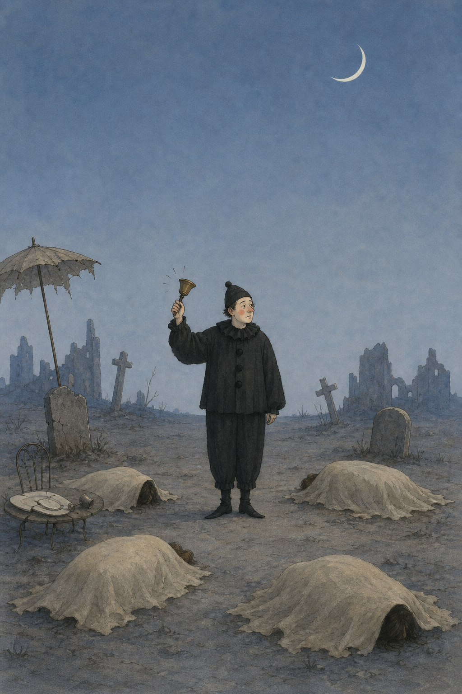
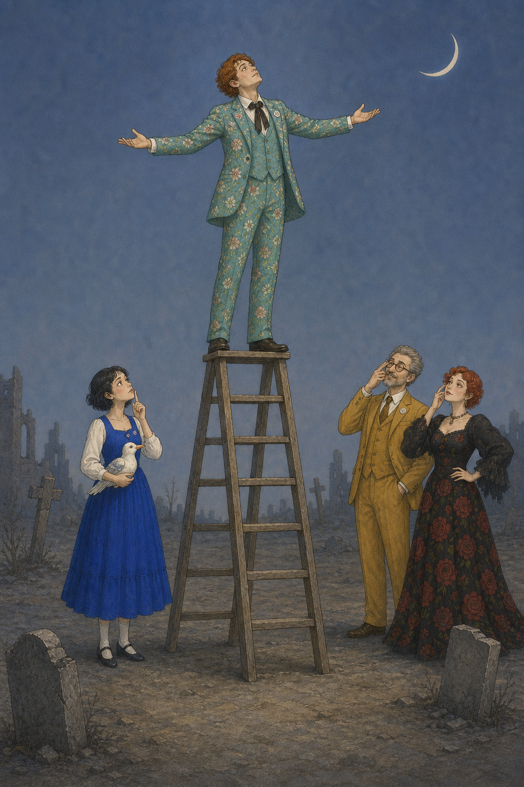
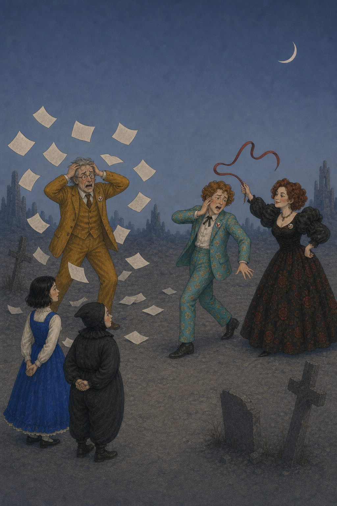
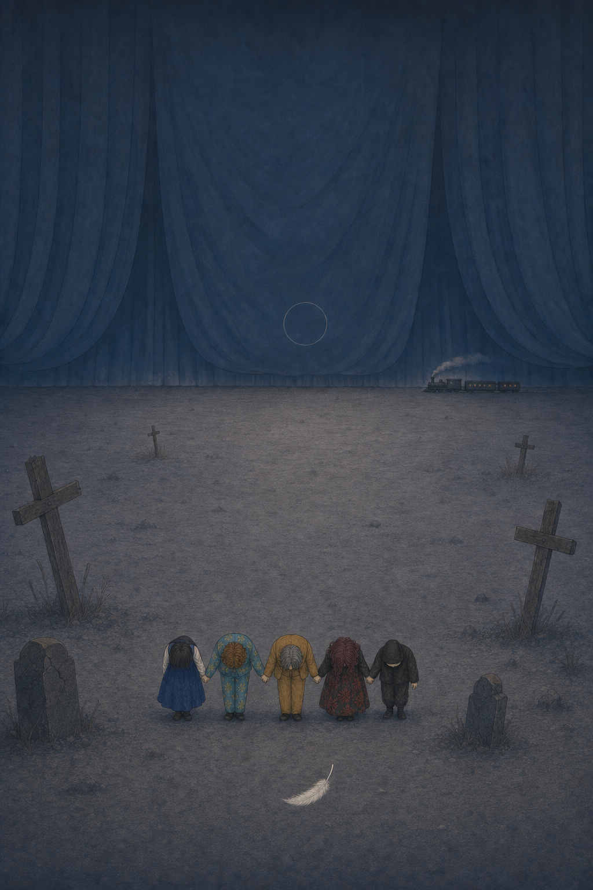

01

막을 여는 종소리
잠든 죽음을
깨우는 광대
달빛 아래, 검은 옷의 광대가 종을 흔듭니다. 천으로 덮인 무덤들은 아직 잠들어 있습니다. 부조리극은 이렇게 시작됩니다 — 진지함과 우스꽝스러움을 한 손에 쥔 채.
광대종초승달
《불굴의 니나》는 푸른 황혼의 무덤가에서 펼쳐집니다. 작가가 그린 일곱 장면 속, 사다리와 깃털과 초승달이 무엇을 말하는지 — 정답은 없습니다. 다만, 공연을 보기 전 당신만의 짐작을 품어 보세요.

달빛 아래, 검은 옷의 광대가 종을 흔듭니다. 천으로 덮인 무덤들은 아직 잠들어 있습니다. 부조리극은 이렇게 시작됩니다 — 진지함과 우스꽝스러움을 한 손에 쥔 채.

새로운 형식을 꿈꾸는 젊은 예술가가 사다리 끝에 섭니다. 발밑에는 갈매기를 안은 니나, 그리고 그를 올려다보거나 비웃는 사람들. 비상하려는 자와 지켜보는 자들 사이의 거리가 곧 이 연극의 긴장입니다.

원작 『갈매기』에서 머리에 붕대를 감은 인물의 장면을, 이 무대는 니나에게로 옮겨 놓습니다. 흘린 피와 그것을 감싸는 손길, 둘러선 사람들의 놀란 시선. 비극을 패러디하면서도 진심은 끝내 남기는 — 이 작품 특유의 방식이 응축된 한 장면입니다.

작가의 손을 떠난 종이들이 바람에 날립니다. 채찍과 비명, 과장된 몸짓. 쓰는 일과 무너지는 일이 동시에 벌어지는 무대 — 예술이 남기는 것과 흩어지는 것을 함께 보여줍니다.

바이올린이 울리고, 인물들은 십자가 사이에서 춤을 춥니다. 희극과 비극이 한 박자 안에 포개집니다. 깃털은 계속 떨어지고, 춤은 멈추지 않습니다.

다섯 사람이 등을 돌린 채, 막이 드리운 빈 무대를 바라봅니다. 무대 위의 인물이 곧 객석의 우리가 되는 순간. 연극은 무엇이고, 우리는 무엇을 보러 온 걸까요.

니나는 다시 사다리에 오르고, 깃털은 하늘 가득 쏟아집니다. 발밑엔 잠든 듯 누운 몸들. 끝과 시작이 맞닿은 장면. 허무 위에서도 끝내 멈추지 않는 질문이 남습니다.
갈매기 대신,
우리 이야기 속에서 당신의 세상을 떠올려 주세요.